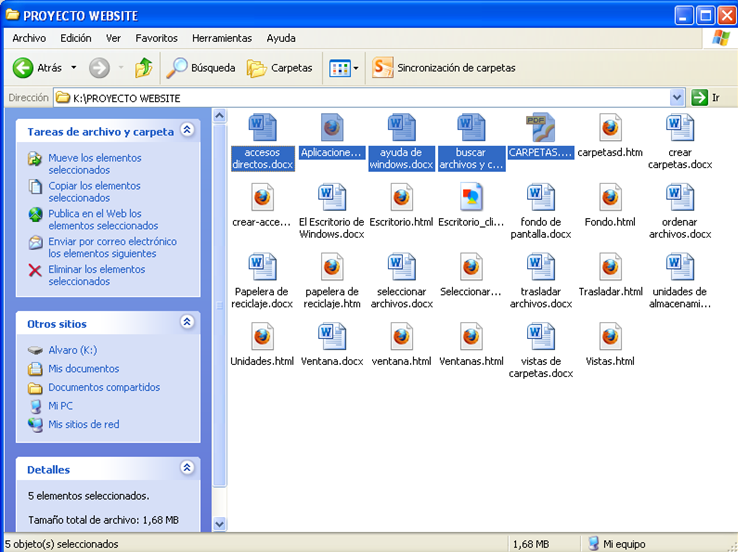
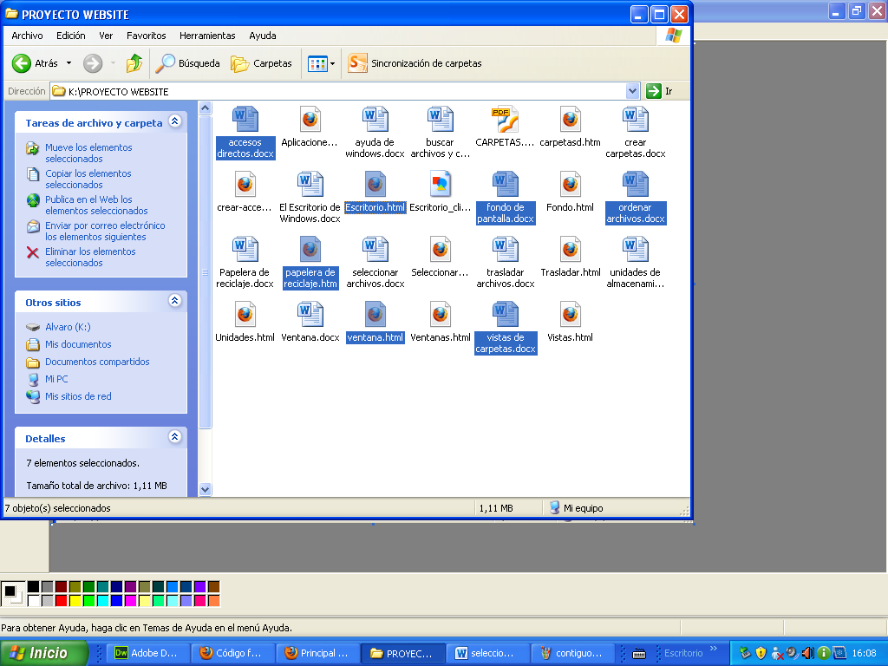

APLICACIONES DE WINDOWS
|
| Página Principal | Siguiente | ||||||||
Seleccionar Carpetas
|
|||||||||
Si quieres seleccionar un único archivo o carpeta sólo debe hacer clic sobre él, de esta manera las acciones que realice se ejecutarán únicamente sobre ese elemento. Si quiere realizar una operación sobre varios archivos o carpetas el Explorador de Windows le permite tener seleccionados varios elementos al mismo tiempo. A continuaciòn se presenta las dos maneras de realizar esta acción:
|
|||||||||
Seleccionar elementos consecutivos Haga clic sobre el primer elemento y de clic sobre el último manteniendo pulsada la tecla Shift. Esta operación también se puede realizar sólo con el ratón, para ello sitúece detrás del primer archivo que quiera seleccionar pero no encima, después haga clic con el botón izquierdo del ratón y sin soltarlo arrástrelo, debe de aparecer un marco que le indica el área que abarca la selección, siga arrastrando hasta abarcar todos los elementos a seleccionar y después suelte el botón del ratón. |
 | ||||||||
|
|||||||||
Seleccionar varios elementos alternativos Seleccione el primer elemento y después vaya seleccionando cada elemento manteniendo pulsada la tecla Control. |
 | ||||||||